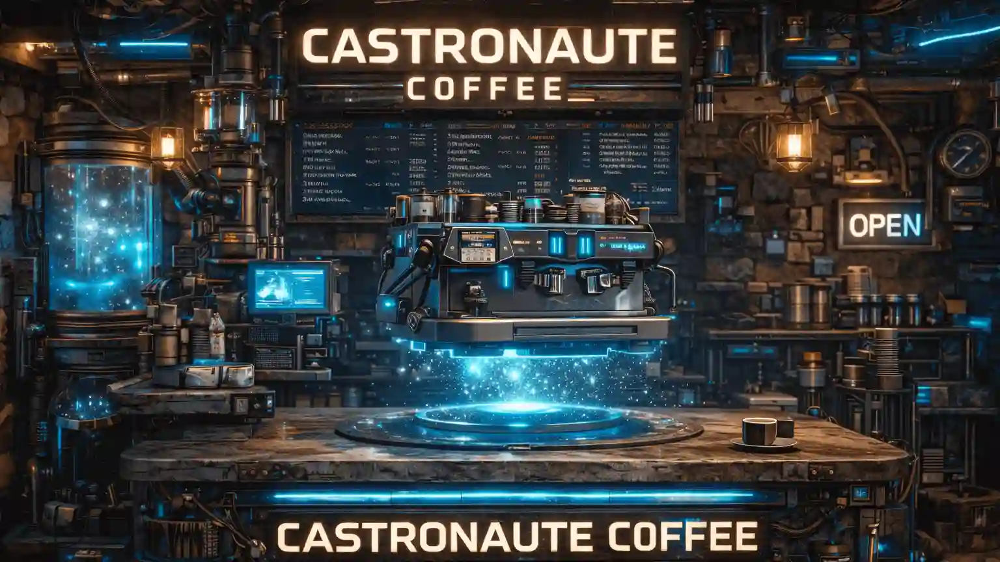

Castronaute Coffee est un coffee shop construit par trois castors comme une station spatiale en rondins, posé au bord d'une rivière sans eau… sur la Lune. Un lieu qui semble improbable, mais qui, étrangement, tient debout. Au fil de leurs explorations, ils ont compris une chose essentielle : le café n'est pas qu'une boisson. C'est un carburant. Celui qui maintient les équipes éveillées, les idées en mouvement et les projets… presque réalisables.